T-041 · 2026-10-17 · 待用户审查两间卧室
效果图与平面布置设计包
10 张生成效果图 + 2 套可量尺寸的 SVG / PDF / PNG 平面图。点击每张图打开原图，提示词、来源与已知偏差都可逐项核对。尺寸以矢量图与物件清单为准；本包不代表 3D 建模或游戏验收。
主人的卧室兼书房
平面布置图 / 1:50
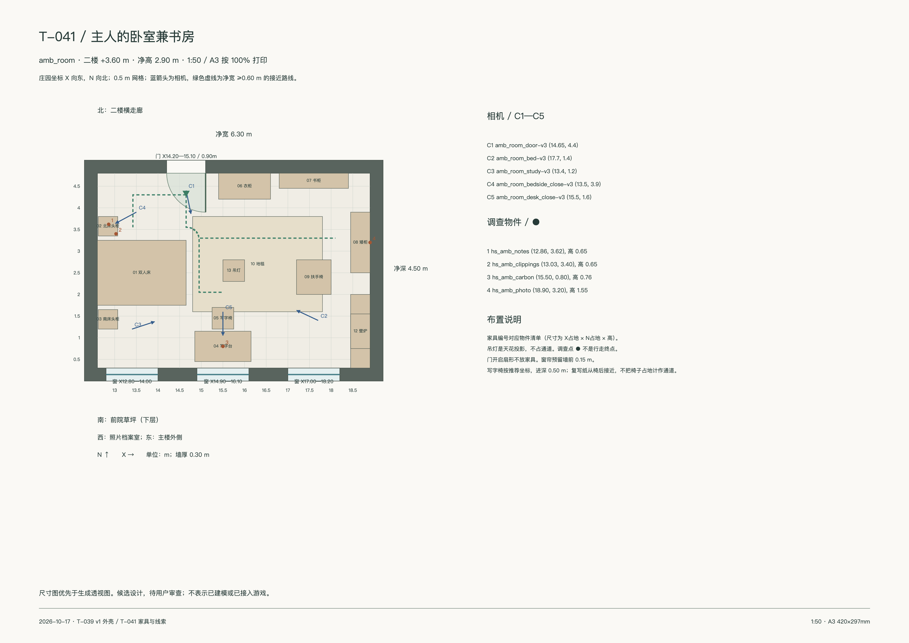
3360 × 2376 px · A3 · SVG / PDF 按100%打印 / 物件清单
amb_room_door-v3
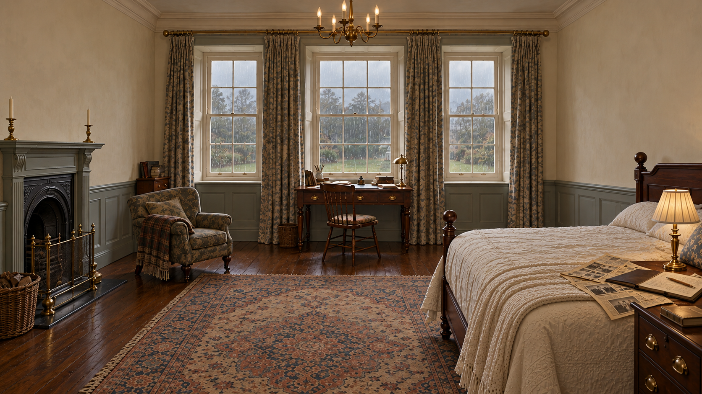
1672 × 941 原生 / 原尺寸复制，无放大 · 待用户审查
三扇南窗、雨、中窗下书桌、西墙床及东墙壁炉可辨；已去掉碎花墙纸、多余侧门和西墙柜体。床头纸张以近景为准；窗格细分及家具尺寸按平面和统一规范。
打开原图 · 实际提示词
amb_room_bed-v3
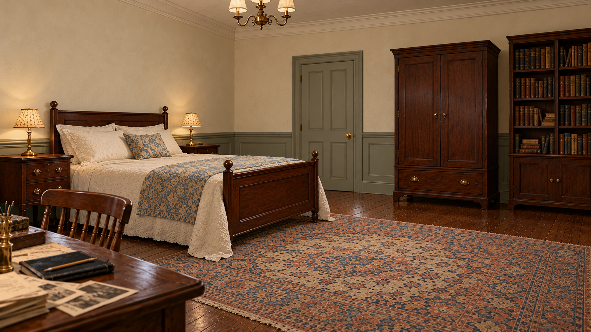
1672 × 941 原生 / 原尺寸复制，无放大 · 待用户审查
西墙床头、双床头柜、北墙门与衣柜/书柜、左下书桌角可辨；已改奶油灰泥和桃花心木床，去掉错误出现在右侧的壁炉。门合页方向按平面图，勿照透视图复制。
打开原图 · 实际提示词
amb_room_study-v3
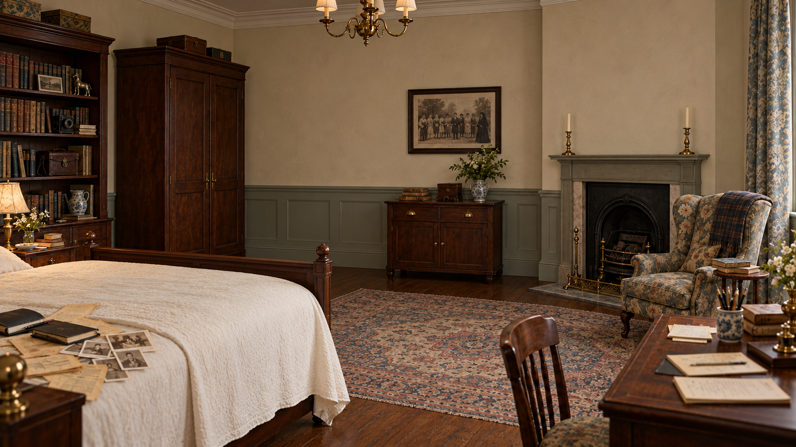
1672 × 941 原生 / 原尺寸复制，无放大 · 待用户审查
东墙合影与下方矮柜、右侧壁炉、左侧书柜、右下书桌形成一组；已删除东墙多余门。合影边缘有面纱女人。北墙柜体顺序、纸张和床头柜位置仍以尺寸图为准。
打开原图 · 实际提示词
amb_room_bedside_close-v3
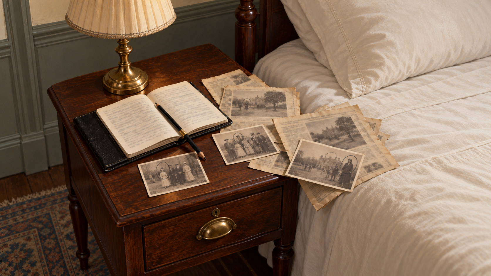
1672 × 941 原生 / 原尺寸复制，无放大 · 待用户审查
摊开黑皮笔记本、铅笔、旧剪报与带铅笔圈的小样清楚可辨；已去花瓶与装饰盒，改木床与素墙，字迹为不可读纹理。
打开原图 · 实际提示词
amb_room_desk_close-v3
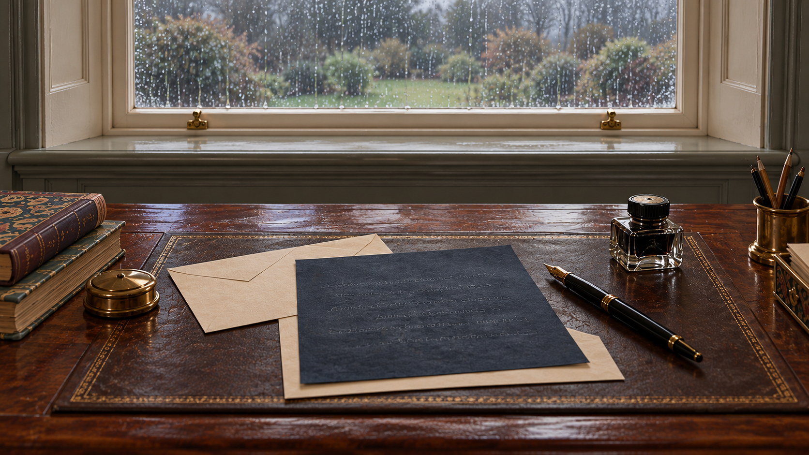
1672 × 941 原生 / 原尺寸复制，无放大 · 待用户审查
已纠正为单张桌面近景，紧邻雨窗；吸墨垫、蓝黑复写纸、信纸信封、钢笔、墨水瓶齐全。压痕为不可读反字状纹理。
打开原图 · 实际提示词
女主人的卧室
平面布置图 / 1:50
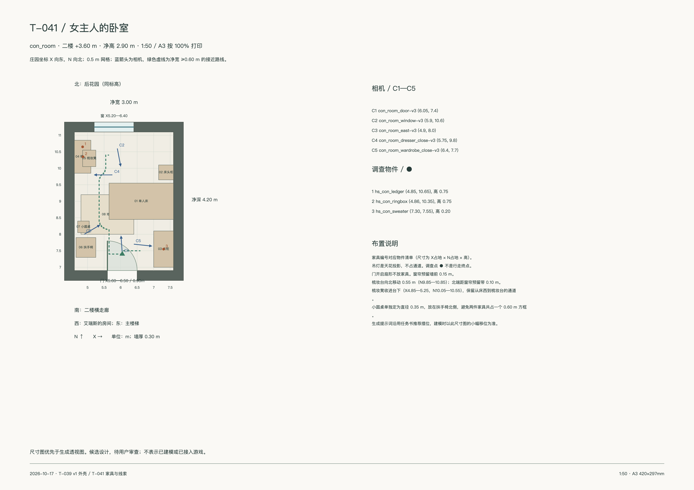
3360 × 2376 px · A3 · SVG / PDF 按100%打印 / 物件清单
con_room_door-v3
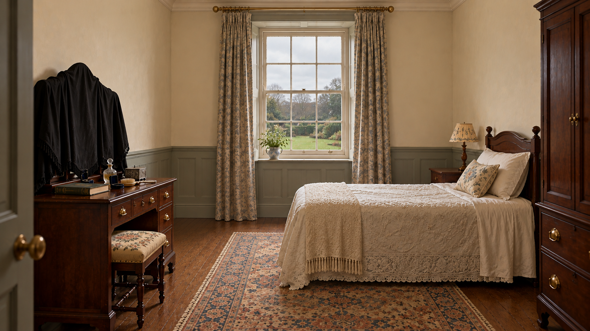
1672 × 941 原生 / 原尺寸复制，无放大 · 待用户审查
北窗与平视草坪、左侧盖黑布三联镜、右侧东墙床头及床头柜齐全；已去碎花墙纸与错误的窗边扶手椅。梳妆台/软凳的通行微调按平面图。
打开原图 · 实际提示词
con_room_window-v3
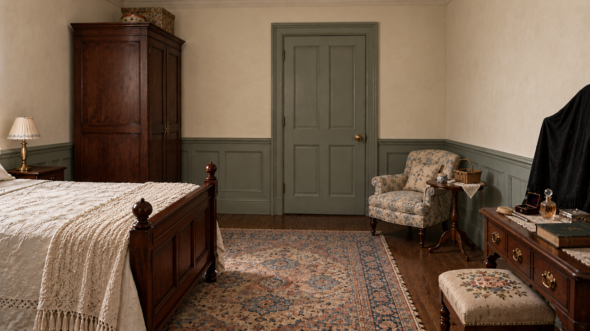
1672 × 941 原生 / 原尺寸复制，无放大 · 待用户审查
反向朝南：门在前方、衣柜与床尾在左、扶手椅与针线小桌在右，梳妆台裁入右前景；已修奶油墙与木床。无额外窗、壁炉。
打开原图 · 实际提示词
con_room_east-v3
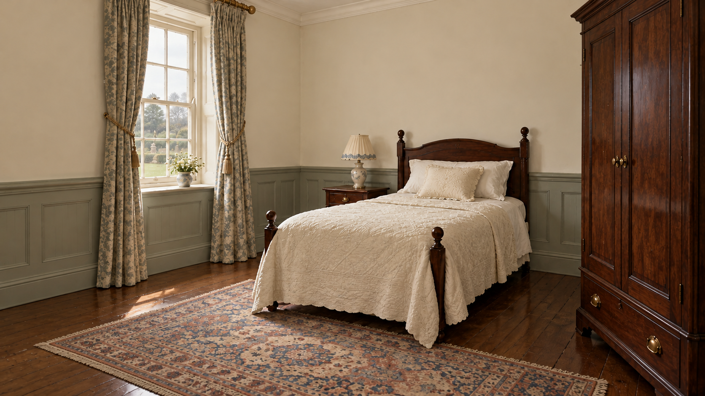
1672 × 941 原生 / 原尺寸复制，无放大 · 待用户审查
东墙床头、右侧衣柜、左侧床头柜与北窗可辨；已移除本应在相机背后的梳妆台和扶手椅。光感比任务书的冷阴天略暖，最终场景布光需统一；不影响家具朝向参考。
打开原图 · 实际提示词
con_room_dresser_close-v3
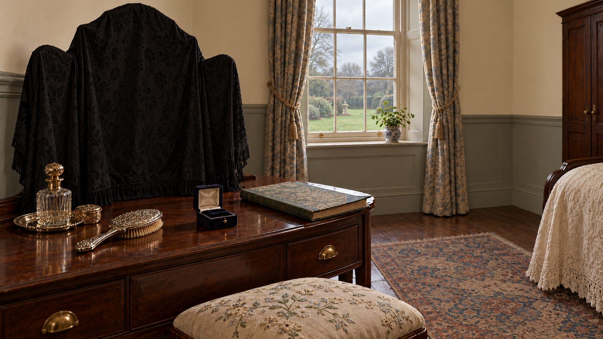
1672 × 941 原生 / 原尺寸复制，无放大 · 待用户审查
黑布完整盖住三联镜，账簿、打开且空的戒指盒、发刷和香水瓶清楚；已去碎花墙纸、错误的窗旁扶手椅和花瓶。
打开原图 · 实际提示词
con_room_wardrobe_close-v3
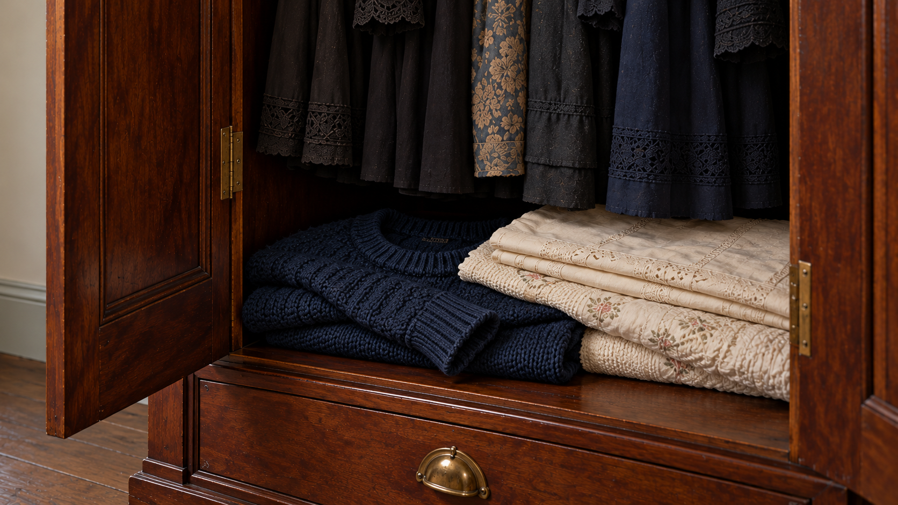
1672 × 941 原生 / 原尺寸复制，无放大 · 待用户审查
成人深色长裙整齐悬挂，底层深蓝少年毛衣的领口、袖口与粗针织纹理清楚；已改为净布部分叠压在毛衣右上方，收紧构图并移除错误的远景家具。
打开原图 · 实际提示词